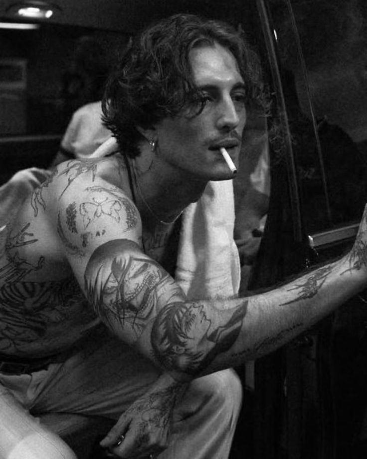
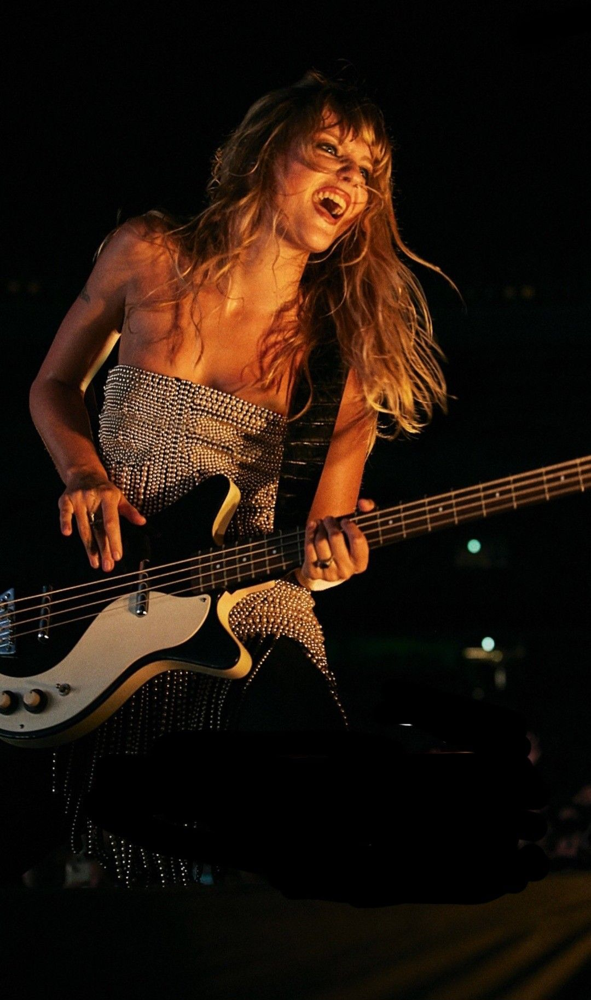
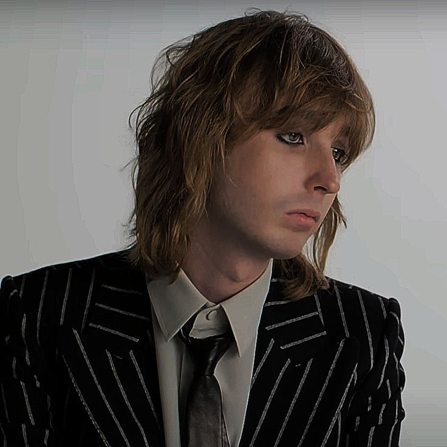
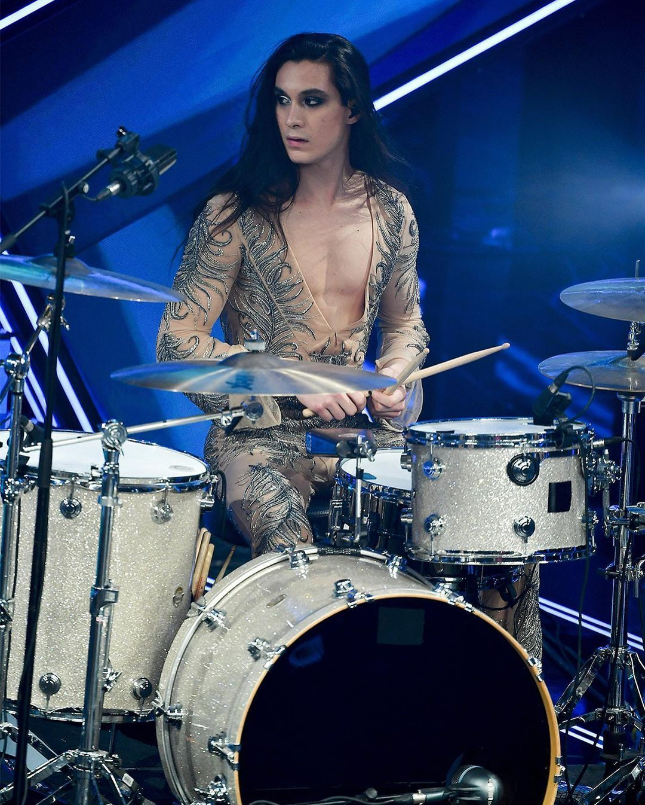

Måneskin
| Назва гурту: | Måneskin («Місячне сяйво»). |
|---|---|
| Жанр: | Глем-рок, альтернативний рок, фанк-рок. |
| Дата заснування: | 2016 рік. |
| Місце заснування: | Рим, Італія. |
улюблені пісні та альбоми (деякі) >>>
2015—2016: започаткування
Учасники гурту вперше зустрілися як учні середньої школи в Монтеверде, Рим. Вони вирішили створити колектив у 2016 році. Назву гурту було обрано, коли їм довелося зареєструватися в місцевому музичному конкурсі для нових гуртів «Pulse». Під час мозкового штурму Де Анджеліс, яка є наполовину данкою, її колеги по гурту попросили сказати кілька данських слів, і вони домовились про «måneskin» (місячне світло), хоча його значення не пов'язане із самим колективом. Конкурс «Pulse» також став поворотним пунктом у їхній кар'єрі, оскільки їм довелося почати писати власні пісні. Змагання призвели їх до виступу в музичному клубі та школі Felt, а згодом вони виграли першу нагороду.
Даміано Давід (Damiano David):
Фронтмен та харизматичне обличчя гурту. Його унікальний хрипкий голос та провокаційний сценічний образ (поєднання маскулінності з елементами глем-естетики: макіяж, підбори) стали візитівкою колективу.
Даміано пише більшість текстів пісень, вкладаючи в них теми свободи, самовираження та боротьби зі стереотипами. До музичної кар'єри серйозно займався баскетболом, але покинув спорт заради гурту.

Вікторія Де Анджеліс (Victoria De Angelis) — Бас-гітаристка
Засновниця та «ідейний двигун» гурту. Саме вона зібрала учасників разом у старшій школі. Вікторія відома своєю енергійною манерою гри та панковим стилем.
Вона є символом жіночої сили в сучасному році та активно виступає за права ЛГБТК+ спільноти. Її данське походження подарувало гурту назву, яка тепер відома всьому світу.

Томас Раджі (Thomas Raggi) — Гітарист
Віртуозний гітарист, якого колеги по гурту називають «The Cobra». Його стиль гри базується на класичному році 70-х та фанкових рифах.
Томас почав грати на класичній гітарі в дитинстві, але швидко перейшов на електрогітару, знайшовши своє покликання в драйвовому звучанні. Він відповідальний за технічну складність та мелодійність інструментальних партій Måneskin.

Ітан Торкіо (Ethan Torchio) — Барабанщик
«Серцебиття» гурту та майстер ритму. Ітан приєднався до колективу останнім, відгукнувшись на оголошення у Facebook. Він відомий своїм довгим волоссям, спокійним характером поза сценою та неймовірною технічністю під час виступів.
Його гра забезпечує той самий потужний драйв, який змушує стадіони танцювати під «Zitti e buoni» чи «I Wanna Be Your Slave».

Шлях до успіху та спадщина
Історія Måneskin — це стрімкий зліт від вуличних музикантів на Віа дель Корсо в Римі до світових зірок:
- X Factor та Санремо: У 2017 році посіли друге місце на італійському X Factor. У 2021 році перемогли на престижному фестивалі в Санремо.
- Євробачення 2021: Тріумфальна перемога з піснею «Zitti e buoni» зробила їх глобальним феноменом. Вони стали першим італійським рок-гуртом за довгий час, що очолив чарти Великої Британії та США.
- Спадщина: Гурт відродив інтерес молоді до живого інструментального року. Вони зруйнували мовний бар'єр, довівши, що пісні італійською мовою можуть бути світовими хітами. Måneskin стали лауреатами MTV EMA, AMA та номінантами на Греммі, довівши, що рок-н-рол не помер, а просто змінив форму на більш інклюзивну та яскраву.